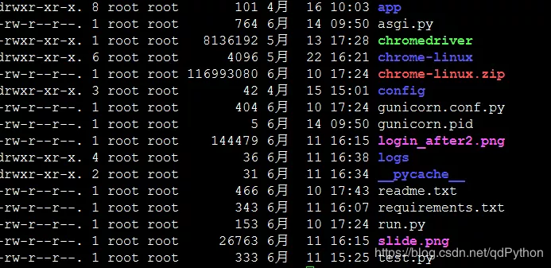

原文连接:https://www.cnblogs.com/xxpythonxx/p/11745415.html
字符串拼接
实际场景：把列表中的数据拼接成一个字符串
解决方案：使用 str.join() 方法
>>> li = ['cxk', 'cxk', 'kk', 'caibi']
>>> ''.join([str(i) for i in li])
'cxkcxkkkcaibi'推荐使用生成器表达式，如果列表很大，可以节省很多内存空间
>>> ''.join(str(i) for i in li)
'3cxkkkcaibi'拆分含有多种分隔符的字符串
实际场景：把某个字符串依据分割符号拆分不同的字段，该字符串包含多种不同的分隔符
s = "ab;fd/ft|fs,f\tdf.fss*dfd;fs:uu}fsd"1.使用 python 中的 split() 方法，由于 split 一次处理一个分隔符，例如：
>>> res = s.split(';')
>>> res
['ab', 'fd/ft|fs,f\tdf.fss*dfd', 'fs:uu}fsd']所以我们需要根据字符串中的分隔符，依次分割，可以是 map 函数！
>>> list(map(lambda x: x.split("|"), res))
[['ab'], ['fd/ft', 'fs,f\tdf.fss*dfd'], ['fs:uu}fsd']]结果变成了一个二维列表，而我们想要的结果是一维列表，怎么办？
创建一个临时列表保存结果。
# Python学习交流QQ群：857662006
>>> t = []
>>> list(map(lambda x: t.extend(x.split("|")), res))
[None, None, None]
>>> t
['ab', 'fd/ft', 'fs,f\tdf.fss*dfd', 'fs:uu}fsd']结果符合我们的预期！接下来继续处理剩余的分隔符，重复动作，用 for 循环搞定！
最终代码如下：
def my_split(s, ds):
res = [s]
for d in ds:
t = []
list(map(lambda x: t.extend(x.split(d)), res))
res = t
return res将字符串和字符串中所有的分隔符传入，结果如下:
s = "ab;fd/ft|fs,f\tdf.fss*dfd;fs:uu}fsd"
print(my_split(s, ";/|,.}:*\t"))
运行结果：['ab', 'fd', 'ft', 'fs', 'f', 'df', 'fss', 'dfd', 'fs', 'uu', 'fsd']2.使用 re 模块的中 split() 方法
re() 也给我们提供了 split() 方法，可以一次性分隔字符串！
import re
s = "ab;fd/ft|fs,f\tdf.fss*dfd;fs:uu}fsd"
print(re.split('[;/|,.}:*\t]', s))结果一致，是不是很简单粗暴！
判读字符串a是否以字符串b开头或结尾
实际场景：比如某目录下有一系列文件：

编写程序给其中所有 .txt 文件和 .py 文件加上用户可执行权限
解决方案：
使用字符串 str.startswith() 和 str.endswith()
找出以 .txt 和 .py 结尾的文件，其接受一个元组
>>> import os
>>> os.listdir(".")
['app', 'config', 'requirements.txt', 'run.py', '__pycache__', 'gunicorn.conf.py', 'chromedriver', 'login_after2.png', 'readme.txt', 'slide.png', 'test.py', 'logs', 'chrome-linux.zip', 'gunicorn.pid', 'asgi.py', 'chrome-linux']
>>> [name for name in os.listdir(".") if name.endswith((".txt", ".py"))]
['requirements.txt', 'run.py', 'gunicorn.conf.py', 'readme.txt', 'test.py', 'asgi.py']调整字符串中文本的格式
实际案列：例如在日志文件中，其中日期格式为'yyyy-mm-dd':
我们想把其中的日期改为美国日期格式'mm/dd/yyyy'.比如 2019-06-12 改成 06/12/2019 格式
解决方案：使用 re 中的 sub() 方法做字符串替换
利用正则表达式中的捕获组，捕获每个部分的内容，然后在替换在替换的字符串中调整各个捕获组的顺序！
代码如下：
import re
with open("info.log", "r", encoding="utf-8") as f:
file = f.read()
print(re.sub('(\d{4})-(\d{2})-(\d{2})', r'\2/\3/\1', file))捕获组中每组需要用括号括起来，然后默认从左至右分为组1， 组2…
下一个参数是我们要替换的格式，用 1，2，3 分别表示组1， 组2…
运行结果如下：

对字符串进行左，右，居中对齐
解决方案：
1.使用字符串中的 str.ljust(), str.rjust(), str.center() 进行左右居中对齐！
以上三种方法的基本用法：
>>> s = 'abc'
>>> s.ljust(20, '=')
'abc================='
>>> s.ljust(20)
'abc '三种方法都可以设置默认填充值
2.使用内置的 format() 方法
>>> format(s, ">20")
' abc'
>>> format(s, "<20")
'abc '
>>> format(s, "^20")
' abc '删除字符串中不需要的字符
实际案例：
过滤掉用户输入中前后多余的空白字符：“ nick2008@gmail.com ”
过滤掉某 windows 下编辑文本中的 “\r” ：“hello world \r\n”
去掉文本中的 unicode 组合符号（音调）：nǐ hǎo mā
解决方案：
使用 str.strip(), str.lstrip(), str.rstrip() 方法去掉字符串两端字符
使用 str.replace() 或者正则中的 re.sub()
使用字符串中 str.translate() 方法，可以同时删除多个不同的字符